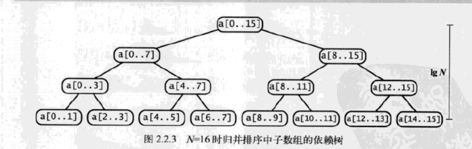

引入
归并排序属于分治算法(Divide and Conquer)。通过递归不断把待排序数组分成两个部分，将有序的两部分再重新归并一起来实现对数组的排序。
[pseudo code for 2-way merge sort]:
1 | MergeSort(arr[], aux[], lo, hi) |
原地归并的抽象方法
要实现上述的归并方法 — merge()很简单，创建一个数组将需要归并的原数组的两个部分中的元素放到这个数组中，然后再归并按大小顺序放回原数组。
但是，这里我们要考虑一个问题，当我们用归并排序对一个比较大的数组进行排序时，我们需要进行很多次归并，因此在每一次归并时都创建一个新的数组来存储排序结果会带来问题。我们可以考虑只创建一个辅助数组
aux[], 在每一个归并时，将原数组需要归并的两个部分复制到aux[]中，再把归并结果放回原数组。
1 | public static void merge(Comparable[] a, Comparable[] aux, int lo, int mid, int hi) { |
[说明] : 该方法先将原数组两个需要归并的部分复制到aux[]中，然后从两个部分的起始位置开始取元素，一直选择两个部分中较小的元素放回原数组中，当有一部分元素取完了，则将另一部分剩余的元素全部放回原数组。
原地归并抽象方法轨迹： [from algs4]

自顶向下的归并排序
1 | public static void mergeSort(Comparable[] a) { |
自顶向下归并结果轨迹 : [from algs4]

自顶向下归并排序调用轨迹 : [from algs4]
命题 F: 对于长度为 $N$ 的任意数组， 自顶向下归并排序需要 $1/2NlgN$ 至 $NlgN$ 次比较。
自顶向下的所需时间表达式为 : $T(N) = 2T(N/2) + O(n)$使用解决递归式的
Master method解得 $T(N) = \Theta(n log n)$
我们可以通过下图来理解命题F, 每个节点都表示一个sort()方法通过merge()方法归并而成的子数组。这棵树正好有 $n$ 层。对于$0 ~ n-1$ 之间的任意 $k$, 自顶向下的第 $k$ 层有 $2^k$个子数组，每个数组长度为 $2^{n-k}$, 归并最多需要 $2^{n-k}$ 次比较。因此每层的比较次数为$2^k X 2^{n-k} = 2^n$, n 层总共为 $n2^n = NlgN$。
子数组树状图 : [from algs4]

命题 G : 对于长度为 $N$ 的任意数组，自顶向下的归并排序最多需要访问数组 $6NlgN$ 次。
证明： 每次归并最多需要访问数组 $6N$ 次（$2N$ 次用来复制， $2N$次用来将排好序的元素移动回去，另外最多比较$2N$次），根据命题F即可得到这个命题的结果。
[小结]: 归并排序排序算法的缺点是辅助数组所使用的额外空间和N的大小成正比。一些能够大幅度缩短归并排序的运行时间的想法：
- 对小规模子数组进行插入排序；
- 测试数组是否已经有序；
- 不将元素复制到辅助数组中。
自底向上的归并排序
实现归并排序另外一种方法是先归并那些微型数组， 然后再成对归并得到的子数组，直到将整个数组归并在一起。
1 | public static void MergeBU(Comparable[] a) { |
[注] : 自底向上的归并排序会多次遍历整个数组，根据子数组大小进行两两归并。子数组的大小 sz 的初始值为 1， 每次加倍。最后一个子数组的大小只有在数组大小是 sz 的偶数倍的时候才会等于 sz(否则它会比sz小)。
自底向上归并排序结果轨迹 ： [from algs4]

命题 H : 对于长度为 $N$ 的任意数组， 自底向上的归并排序需要 $1/2NlgN$ 至 $NlgN$次比较，最多访问数组 $6NlgN$ 次。
证明 ： 处理一个数组的遍数正好是 $lgN$(即 $2^n <= N <2^n+1$ 中的 $n$)。每一遍会访问数组6N次。比较次数在 $N/2$ 和 $N$ 之间。
【补充】： 当数组长度为 2 的幂时，自顶向下和自底向上的归并排序所用的比较次数和数组访问次数正好相同，只是顺序不同。其他时候，两种方法的比较和数组访问的次序会有所不同。
NOTICE
本文中，涉及的算法详细实现和使用，请移步到github查看。